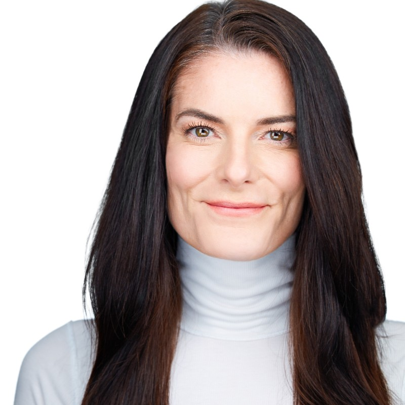
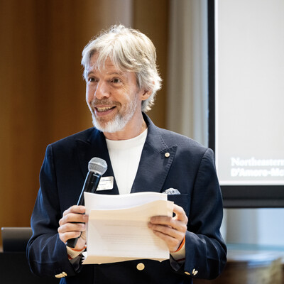
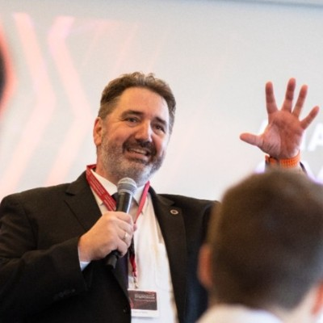
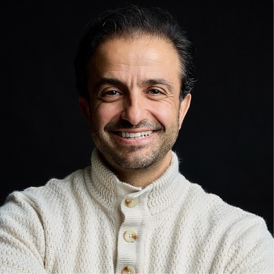
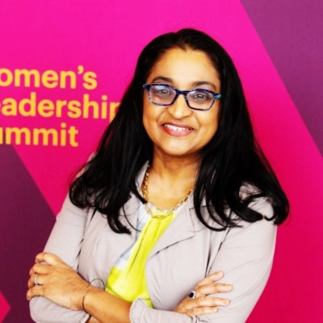
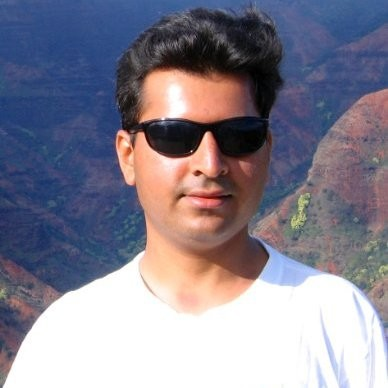
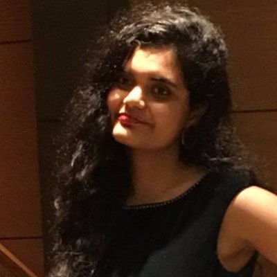
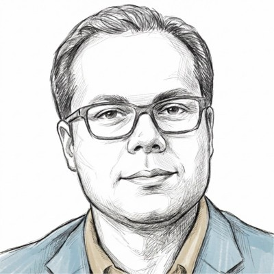
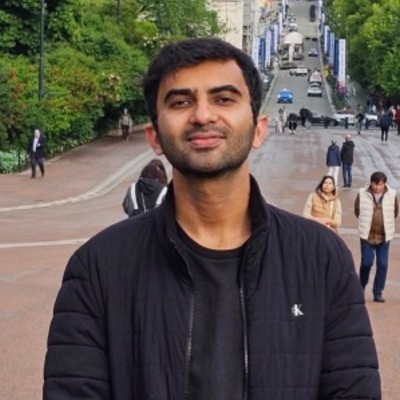
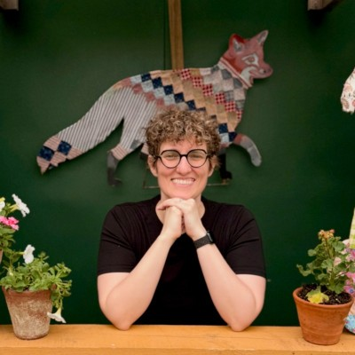

AI for Humanity
We believe the most valuable resource in the AI age isn't compute or data, it's our Benevolent Bandwidth. It's the human capacity to care, build, and ensure technology serves the many instead of the few.
We solve problems with transparent and open technologies that deliver public benefit by prioritizing safety, fairness, and trust.
We are building a world where the benefits of AI are shared by everyone, strengthening fairness, opportunity, and human agency.
We identify important problems and ideas that deliver public benefit which can be solved with technology
We identify, motivate and onboard technical advisors and contributors
We connect ideas with contributors
We execute on the ideas and connect users with the tools
Stewards of the foundation
Owners of projects and repos
Execution leaders
Administrators of the foundation
The Executive Committee is responsible for the administrative and operational health of The Benevolent Bandwidth Foundation. Members lead key functions including nonprofit and NGO partnerships, project monitoring, PR and communications, conference relationships, recruiting and university partnerships, contributor engagement, legal and compliance, and technical infrastructure. Together, they ensure that The Benevolent Bandwidth Foundation runs effectively, grows sustainably, and stays true to its mission. They are the infrastructure behind the impact.
Associate Professor of AI in Climate Change, Georgetown University
Previously: VP of Data Science, Capital One. Chief Engineer, Department Head, MITRE

Founder, NdP coaching
Previously: VP of Community Investing and Impact, Capital One. COO, DataKind

Distinguished Professor of Marketing and Assoc Dean of Research, Northeastern University
Chief Marketing and Communications Officer, Prudential Financial
Previously: Head of Core Mrketing, CapOne. SVP Head of Owned Digital Marketing and Personalization. Marketing Speciality, McKinsey & Co.
Managing VP of Data and Data Science, Capital One
Previously: Dir of Research, Travelers

Associate Dean and Program Director for Economics and Analytics, Boston College

Founder, The Benevolent Bandwidth Foundation
Head of Global Credit Infrastructure, Data and AI, PayPal
Previously: Head of Enterprise AI, Capital One and Fidelity Investments. Head of ML and Data, Amazon Payments.
Head of Real Estate Solutions, Proxet. Managing Principal, Line Advisors. Attorney at Law
Previously: Co-Founder and CEO, LeasePilot

Chief Product Officer, Shopt AI and paPAyaRx Solutions
Previously: CEO and Co-Founder, MajorBoost. Entrepreneur In Residence, Allen Institute for AI (AI2). Global Head of Product, Design, ML, and Data, Amazon Payments
Senior Director, UX Google Cloud
Previously: AI and Data Experience Design, JP Morgan Chase and Capital One
Secretary/Clerk, The Benevolent Bandwidth Foundation
Assistant Professor of the Practice in Applied Economics, Boston College
Previously: Macroeconomics Instructor, Northeastern University
Treasurer, The Benevolent Bandwidth Foundation
Executive Coach
Previously: Vice President of Global Client Optimization, Visa
CFO and Founder, Indivisible Partners
Previously: Partner, Convergence Partners. CFO and CIO, Hometap. Head of Corporate Planning and Analysis, Fidelity Investments.

Director of AI, Capital One
Previously: Fermilab, Stanford Linear Accelerator Center
AI Product Founder, HappyFin
Previously: Velocity Black and Capital One

Applied Scientist, Amazon AGI
Previously: Lead Machine Learning Scientist, Applied Research (LLMs), AI Foundations Team, Capital One

Director of AI, Fidelity Investments
Previously: Manager of Advanced Analytics, Bank of America
Data Engineer and Analyst, Capital One
Previously: Data Analyst, Fragport AG
Member of Technical Staff, Nile
Previously: Data Science Manager, SiriusAI

BI Developer, Qvinci Software
Previously: Business Analyst, IBM. Senior Consultant, Systems Limited
Professor of Applied Analytics, Boston College
Vice President, Data Science, Fidelity Investments
Previously: Sr. Research Manager, IMRB International
NGO and Nonprofit Partnerships
Founder, Solaria Strategy. Member of the Board of Directors, Association of Enterprise Opportunity
Previously: Chief Strategy Officer, Justice Climate Fund. Director of Community Impact, Capital One.
GTM and Product Continuity
Chief Product Officer, FinLocker
Previously: Lead of Credit Wiser, Capital One. Associate Partner, Dalberg. Project leader, BCG Consulting
Conference Relationships
Administration, Capital One
Previously: Administration, Bank of America
AI and Agent Ethics
Technical Fellow, AI Safety Initiative, Georgia Tech

PR, Communications, and Social Media
Chief of Staff, Capital One
TA and Contributor Recruiting
Manager of Technology and Innovation (AI), Amgen
Previously: Senior Consultant, Deloitte Digital
Contributor Engagement and Benefits
Previously: Sr Director of Marketing Operations and Automation, TIAA. VP of Martech, JP Morgan Chase
Our projects represent a vision for using AI and technology to solve real-world problems. Each idea has been carefully vetted to ensure alignment with principles of public benefit, privacy protection, and open-source development. Active projects and our backlog span several key problem domains where technology can create meaningful impact. Our goal is to develop deep expertise in each domain over time, building specialized solutions that address systemic challenges through AI-powered tools.
Our initial focus areas span the following domains:
Over time, we aim to partner with non-profits, NGOs, and other public benefit organizations to jointly solve problems at scale using technology and AI, amplifying the collective impact on the communities we serve.
Problem domain: AI infrastructure
The Benevolent Bandwidth Foundation is building an open-source agentic AI platform that puts the power of AI in the hands of developers and organizations serving the world's most vulnerable populations. Our platform runs over the channels people already use, speaks the languages they already speak, and is designed from the ground up to be private, extensible, and humanitarian by default. Any NGO, aid organization, community program, or developer can easily build and deploy AI workflows, agents, and skills. For our first use case, we are partnering with GiveLight.org to bring this platform to life.
Problem domain: Education
The GenAI Academy for Nonprofits is a hands-on program designed for executive directors, founders, and organizational leaders who want to put AI to work. No technical background required. In just a few hours, participants go from understanding how AI actually works to building live automations, writing better prompts, and leaving with a prioritized AI strategy tailored to their organization. Every session is practical, grounded in real nonprofit challenges, and every participant walks away with something they can use immediately.
Problem domain: Access to Information
Too many important papers get lost in the noise. Most researchers and practitioners cannot reliably scan what is new recently in their area, find truly promising work, and trust that they did not miss something big. This agent helps with this problem by finding, ranking, and explaining recent AI papers on arxiv.org.
Problem domain: Environmental Impact
EcoTag is a smartphone app that empowers consumers to make sustainable choices by revealing the hidden environmental cost of their clothing. Using Optical Character Recognition (OCR) to scan garment tags, the tool calculates estimated lifecycle carbon emissions based on materials and origin. This provides shoppers with immediate, actionable data on the carbon footprint of their potential purchases.
Problem domain: Logistics
The Delivery Optimizer helps local businesses like florists and dry cleaners eliminate the waste of manual route planning. Owners simply upload a list of addresses to the web tool, which uses open-source algorithms to generate the most efficient delivery order. This streamlined process saves time and fuel while reducing the carbon footprint of local logistics.
Problem domain: Environmental Impact
People don't know if fixing old gadgets is worth the cost, so e-waste accumulates. This economic triage tool queries live marketplaces for part and resale prices to advise consumers whether to repair or recycle their old or broken electronics, helping reduce environmental waste while saving money.
Problem domain: Nutrition
Healthy marketing is deceptive and identifying ultra-processed foods on the NOVA scale is hard for consumers. This red light/green light scanner helps grocery shoppers avoid ultra-processed foods by using OCR and AI to read ingredients and classify foods, providing instant guidance on food quality.
Problem domain: Healthcare
Screening mammography has limitations, including false negatives and false positives. Individuals often lack a meaningful "second signal" on their results, or they experience anxiety from indeterminate findings. Second Look is a consumer-facing, AI-assisted interpretation companion that analyzes user-uploaded mammography images to identify regions that warrant attention and assign a coarse concern tier. It provides informed, conservative decision support to prompt professional follow-up, not to replace a doctor. The tool utilizes on-device inference for privacy and is available as a web or mobile application.
Problem domain: Access to Information
Beacon is a project designed to protect the elderly from malicious sites, emails, and links, including AI-generated content. This tool helps vulnerable users navigate the digital landscape safely by identifying and warning about potentially harmful content, reducing the risk of scams and phishing attacks that disproportionately target older adults.
Problem domain: Financial Protection
High-cost credit products can trap low-income borrowers in cycles of debt, especially when the true cost of a loan is hidden behind "easy" monthly payments. The Real Cost of Lending Lens helps borrowers, starting with a first phase focused on India, understand the full cost of payday-style loans, title loans, and rent-to-own offers. Users photograph a loan document, the tool extracts APR, fees, and payment terms, and then shows the total amount to be repaid and compares it against safer alternatives. By turning opaque fine print into clear, upfront totals, the project aims to prevent people from signing exploitative agreements.
Join our community of contributors building AI tools for public good. Whether you're a developer, researcher, or enthusiast, there's a place for you.